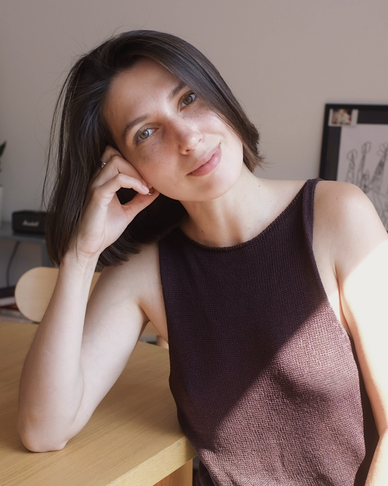
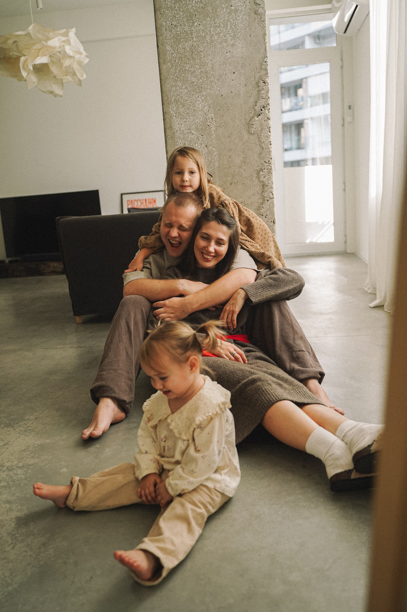
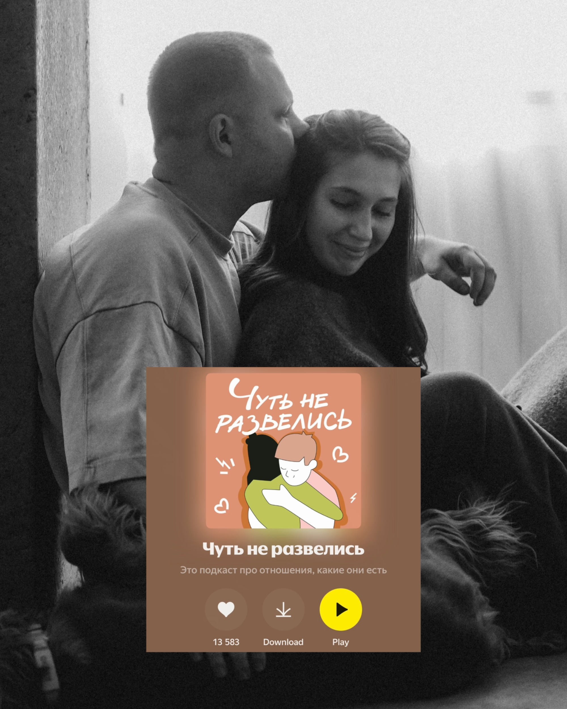
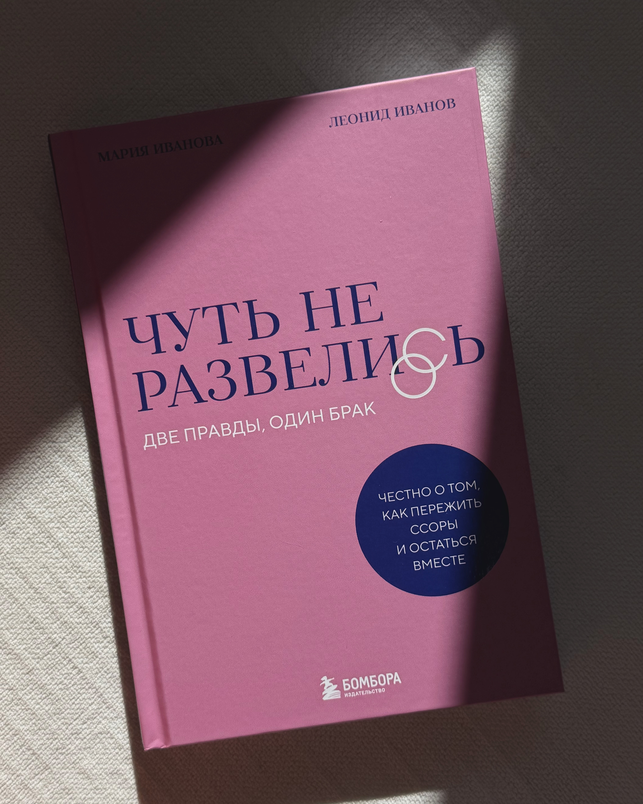
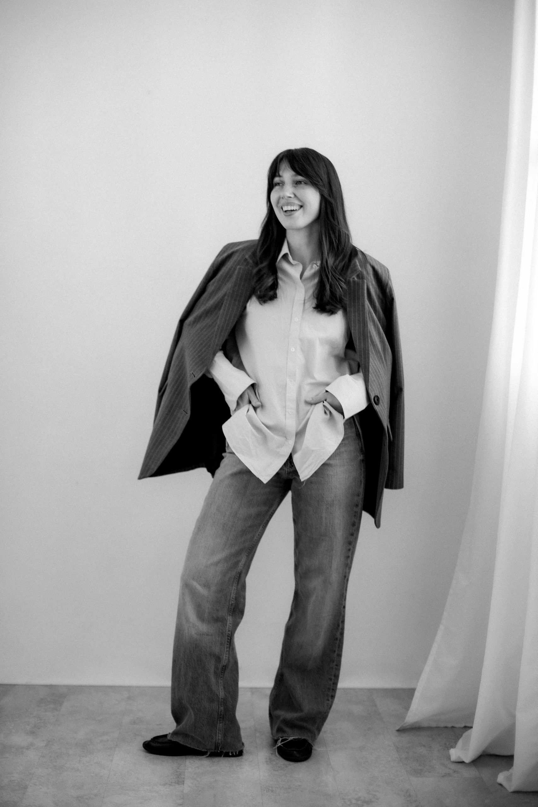

01
Индивидуальная
терапия
Когда хочется лучше понять себя, свои чувства, потребности и привычные сценарии в жизни и отношениях.
60 минут · 90 € · 7 000 ₽Подробнее →
Психолог, парный и групповой терапевт, автор книги и подкаста «Чуть не развелись»

ФОРМАТЫ РАБОТЫ
Когда хочется лучше понять себя, свои чувства, потребности и привычные сценарии в жизни и отношениях.
Когда между вами много конфликтов, дистанция, обида и ощущение, что вы перестали слышать друг друга.
Пространство, чтобы исследовать себя в отношениях с другими людьми и пробовать новые способы быть в контакте.

ОБО МНЕ
Психология пришла в мою жизнь во время подготовки к первой беременности. Тогда я начала изучать детскую психологию — и неожиданно стала лучше понимать не только ребёнка, но и себя.
Позже, переживая семейный кризис, я стала исследовать тему отношений глубже: в личной терапии, через обучение и практику. Так работа с близостью, конфликтами и изменениями в паре стала моим осознанным профессиональным выбором.
Моё первое образование связано с международными отношениями и иностранными языками. Но со временем меня всё больше увлекало другое: что происходит между людьми, как возникает близость, почему мы отдаляемся, как проживаем кризисы и что помогает отношениям меняться.
Мы с мужем вместе 13 лет, у нас двое детей. Вместе мы создаём подкаст «Чуть не развелись» и написали книгу. Я знаю из личного опыта, как непросто проходить через семейные кризисы — и как важно сохранять возможность слышать друг друга в этот период.
Я практикую как психолог уже четыре года, провела более 2 000 часов консультаций и продолжаю учиться. Исследование отношений — то, что мне по-настоящему интересно и что каждый день вдохновляет меня в работе.

ПОДКАСТ
Наш с мужем проект про отношения, кризисы в них и родительство.
В 2022 году мы пережили большой кризис в отношениях и чуть не развелись. Но не разводиться — это наш осознанный выбор.
В этом подкасте мы говорим о кризисах отношений и родительства: как поняли, что они в нём, куда обращались и какие инструменты пробовали. Никаких советов и волшебных таблеток, только наш житейский опыт в формате диалога.
О подкасте →КНИГА
Две правды, один брак. Честно о том, как пережить ссоры и остаться вместе.
Спустя два года работы над подкастом «Чуть не развелись» к нам пришло издательство Бомбора с предложением написать книгу о нашей истории. В 2025 году наша книга вышла в свет. Она про отношения, которые живут не по сценарию романтического кино: про кризисы, расставания, возвращения друг к другу, взросление рядом и ту самую любовь — обычную любовь неидеальных людей.
Купить книгу →
МАТЕРИАЛЫ И ПРОДУКТЫ
О повторяющихся ссорах, эмоциональной близости и способах возвращать контакт.
Дневник, который можно распечатать и использовать в повседневной жизни для исследования своих эмоций и состояний.
Поможет увидеть рядом с собой реального партнёра, отделить ожидания от реальности и вернуть себе партнёра, а не родителя.
Поддерживающая группа для психологов по теме блога, проявленности и набора клиентов.
Подробнее →